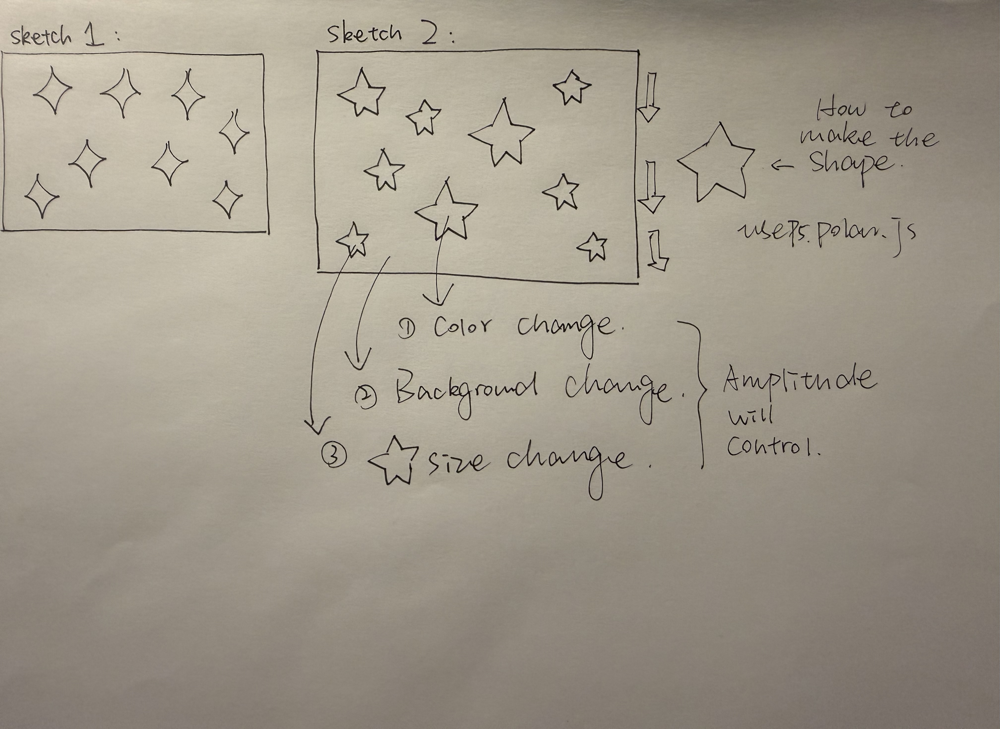

I created a starry sky that changes in response to music. The scene features 20 five-pointed stars that fall slowly at the same speed, though each star is a different size and color. As stars fall off the screen, new ones appear at the top, keeping the scene in constant motion. Viewers can tap the screen to play or pause the music. I wanted this piece to feel light and relaxed, like the stars are dancing to the music.
The music I used is “Dreaming Through Dusk, Lofi beats” by RibhavAgrawal, available on Pixabay. Initially, I chose a track with a faster tempo, but after incorporating it into the piece, I felt it didn’t quite match the slowly falling stars and didn’t sound as soothing. Later, I switched to this more soothing track. It has a rhythm and variations in volume, which better suit the starry night atmosphere I was aiming for. I used p5.Amplitude and getLevel() from p5.sound to measure the music’s amplitude, that is, how loud or soft the sound is while playing.
The volume of the sound affects three things: the size of the stars, their color, and the background color. Each star already has its own size; when the sound gets louder, the stars grow larger than their original size. When the sound is quieter, the background is blue, and the stars are dark blue-gray. When the sound is louder, the background turns pink, and the stars display their own randomly selected pastel colors. I use these noticeable changes to show when the music gets louder or quieter, while keeping the stars falling slowly.
In the code, I use the Star class to create stars and random() to determine their horizontal position, initial size, and color. I store the stars in an array, using shift() to remove stars that have fallen off the screen and push() to add new ones. The five-pointed star shapes are drawn using polarTriangles() from p5.Polar. For the sound, I use async, await, and loadSound() to load the music; p5.Amplitude, sound.connect(), and getLevel() to retrieve the amplitude; and map() to apply the measured values to the stars’ size changes. When the viewer clicks on the screen, mousePressed() controls the music via isPlaying(), play(), and pause().
My main learning resource was our Week 12 class handout, Working with sound in p5.js. I learned isPlaying() and pause() from the official p5.SoundFile reference. The music is from Pixabay, composed by RibhavAgrawal. I used p5.js, p5.sound, and p5.Polar to create this piece, and I also referred to the course material on sound processing as well as Promises, async, and await. Specific links to these resources will be provided in the References section below.
